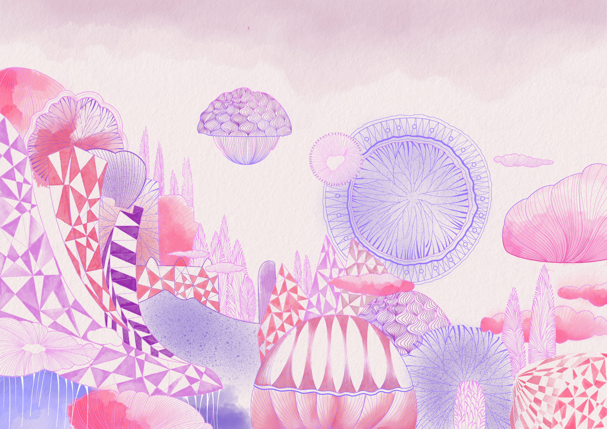
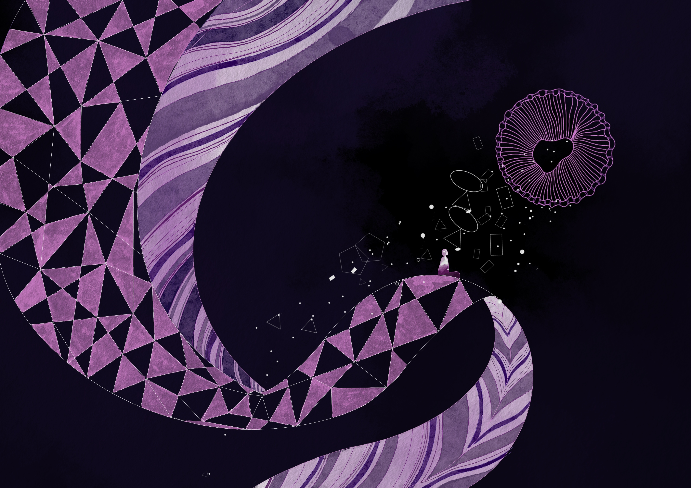
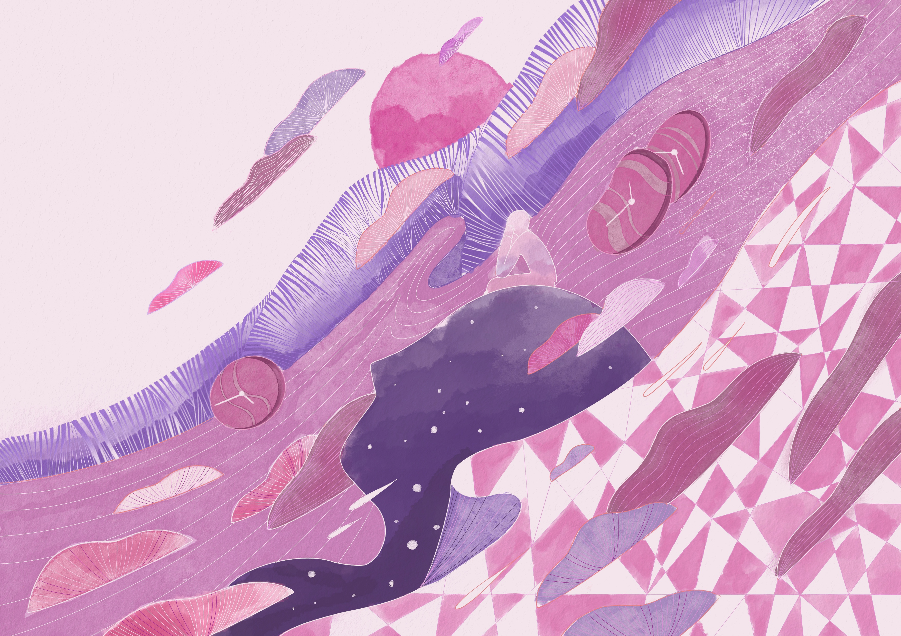
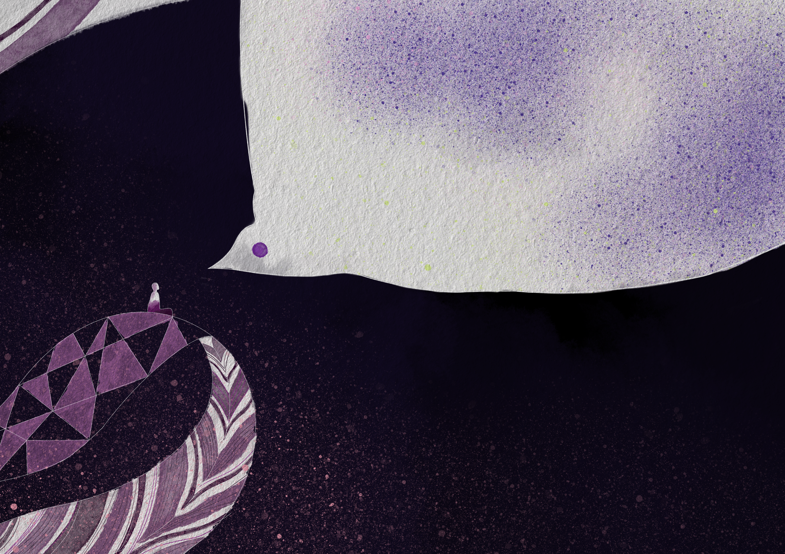
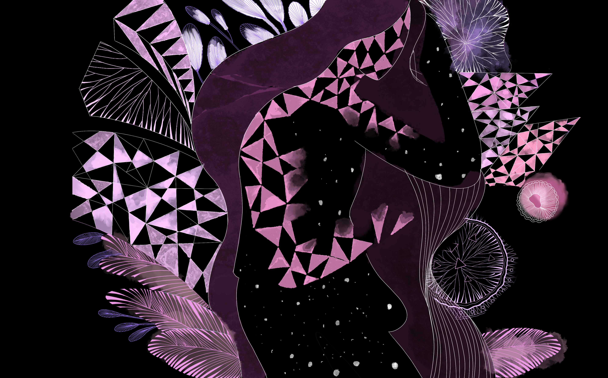

Narrative Illustration · 2021
Sleep
March–June 2021
Sleep depicts a city called Dream that can rest neither during the day nor at night.
After a long search, Dream learns from the white crow that she cannot sleep because she has lost her sleep.
Fortunately, Dream eventually recovers what was missing and finally falls asleep peacefully.




